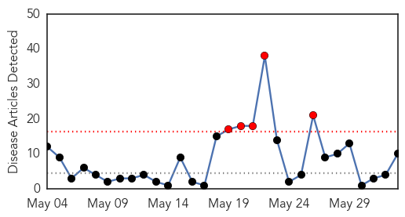
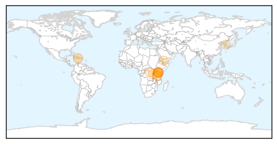
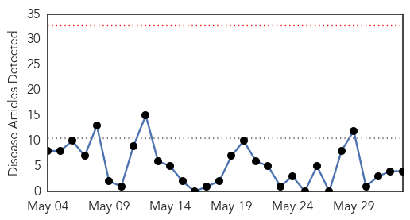
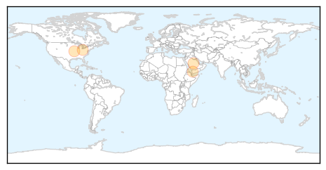
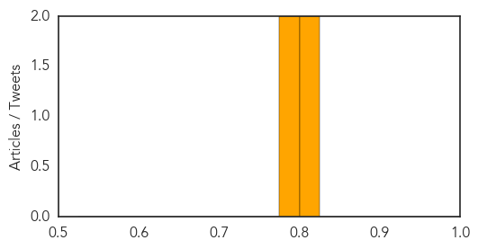

Cholera
30-Day Web Trend
5 alerts, 0 warnings

30-Day Twitter Trend
2 alerts, 0 warnings

Article Locations
Article Confidences

Top Articles:
- 0.988
- Kenya: MSF concerned with the rapid spread of the cholera outbreak
- 0.983
- WHO Strengthens Laboratory Capacity During Cholera Outbreak in Tanzania
- 0.980
- MSF concerned with the rapid spread of the cholera outbreak in Kenya
- 0.979
- Haiti Sees Spike In Cholera Cases 4 Years After Outbreak Began
- 0.953
- Kenya: MSF warns against rapid spread of cholera outbreak
- 0.814
- Kenya: Cholera Emergency Plan of Action (EPoA) Operation n° MDRKE033, EPoA update n° 1 - Kenya
- 0.765
- 16 Million Yemenis Have No Clean Water
- 0.711
- Cerf : UN: UN boosts relief support for refugees fleeing Burundi crisis
- 0.650
- UN relief wing boosts emergency support to refugees fleeing Burundi crisis
- 0.643
- The dire reality of "universal health care" in North Korea- Daily NK
Top Tweets:
- 0.511
- RT: Dr Abdi WHO Country Rep. SouthSudan speaking to State Minister of Health Dr Ito at Torit Cholera Treatment Centre http://t…
Measles
30-Day Web Trend
0 alerts, 0 warnings

30-Day Twitter Trend
0 alerts, 0 warnings

Article Locations
Article Confidences
Top Articles:
Top Tweets:
-
No tweets found for Jun 02, 2015